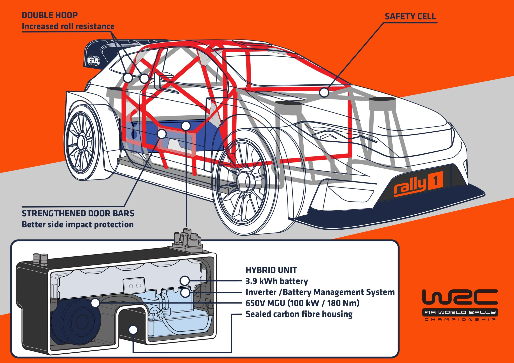
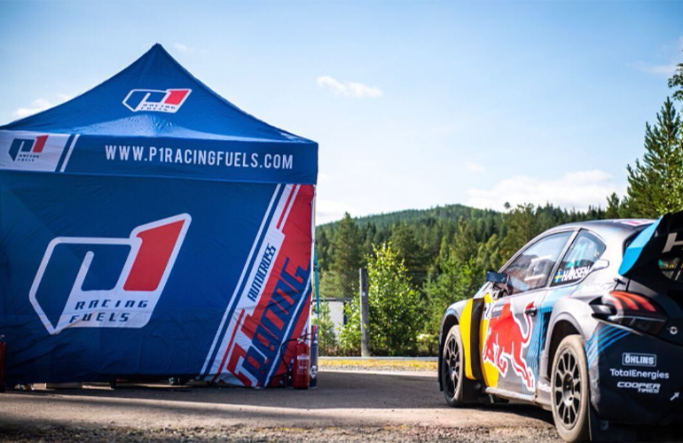

100kW Electric Boost
Modern Rally1 cars combine a 1.6-liter turbocharged engine with a standardized 100kW (134hp) electric hybrid unit provided by Compact Dynamics.

70 Years of Speed, Dirt & Endurance
Modern Rally1 cars combine a 1.6-liter turbocharged engine with a standardized 100kW (134hp) electric hybrid unit provided by Compact Dynamics.

Since 2022, the FIA World Rally Championship switched to fully synthetic non-fossil fuels, using bio-waste derivatives to maintain zero carbon impact.
